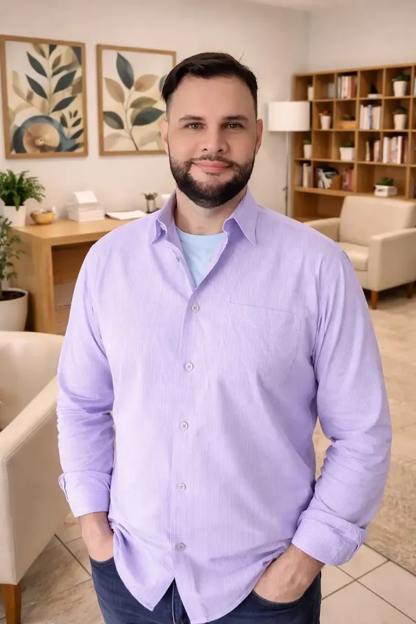
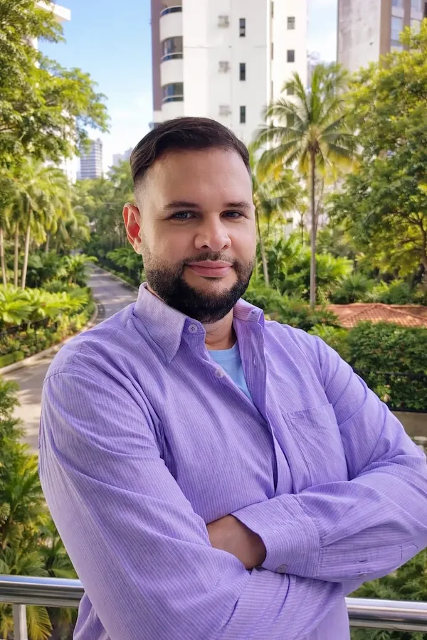
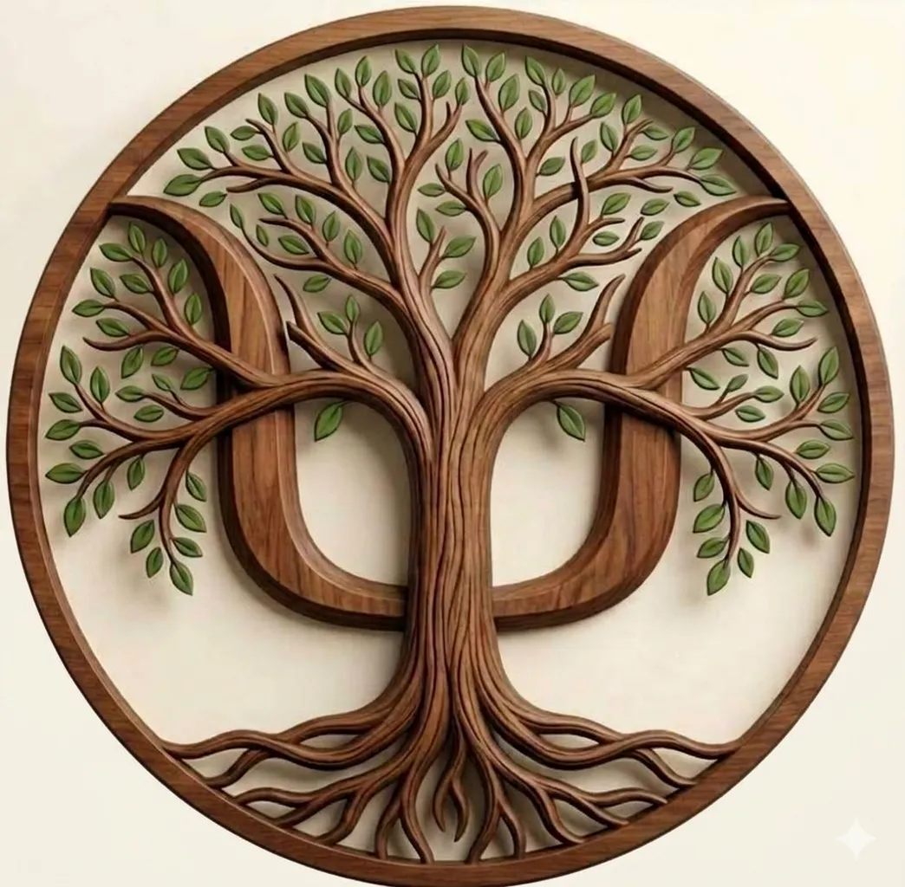

Psicologia que respeita sua história e honra sua vida.
no seu tempoUm espaço seguro, acolhedor e sem julgamentos, onde você pode ser quem é e encontrar recursos para se autoconhecer, autoafirmar e atravessar os desafios emocionais, o luto e as transições da vida com suporte especializado.

Olá, eu sou Téo Lima
Graduei-me em Psicologia pela Universidade Federal da Bahia (UFBA) e possuo especializações em Cuidados Paliativos e em Psicologia Hospitalar, além de formações em Terapia de Aceitação e Compromisso (ACT) com Narrativas Funcionais, Saúde Mental, Dependência Química, Transtornos Alimentares e Psicologia Antirracista e Afirmativa. Estou atualmente em pós-graduação em Terapia Comportamental Dialética (DBT) pela Faculdade Metropolitana.
Minha trajetória foi construída no cuidado real com pessoas em momentos de grande vulnerabilidade. Tive uma proveitosa imersão de aprendizado na Ala Infantil e na UTI Infantil do Hospital das Clínicas da UFBA, além de experiências igualmente enriquecedoras no CETAD/UFBA (referência nacional no tratamento de dependência química com foco em Redução de Danos). Essas profundas formações práticas me deram algo que nenhum livro ensina: a capacidade de estar presente, de verdade, nos momentos mais difíceis da vida de alguém.
Atuo na Psicologia Clínica há mais de 7 anos, incluindo experiências com Terapia Breve, e desde 2022 ofereço atendimento voluntário no CECOM (Centro Comunitário Clériston Andrade), em Salvador, por acreditar que cuidar de pessoas não deve depender apenas da capacidade financeira. A Psicologia precisa chegar a todas as pessoas e classes sociais que eu puder humanamente alcançar.

ACT com Narrativas Funcionais
Minha linha de abordagem é a Terapia de Aceitação e Compromisso (ACT) com Narrativas Funcionais; uma das abordagens mais modernas, versáteis e cientificamente fundamentadas da psicologia contemporânea.
A ACT não busca eliminar o que você sente, nem te convencer de que seus pensamentos estão errados. Ela apenas convida a fazer algo muito mais poderoso: aprender a observar seus pensamentos e emoções sem ser dominado por eles, criando espaço para agir de forma comprometida com o que realmente importa na sua vida. Por ser uma abordagem transdiagnóstica (eficaz para uma ampla variedade de condições, sem depender de um diagnóstico específico) a ACT se aplica a diferentes pessoas, contextos, condições e momentos da vida.
As Narrativas Funcionais, integradas à ACT, utilizam a história de vida do paciente para promover flexibilidade psicológica. Diferente de uma análise linear do passado, essa abordagem recontextualiza a experiência vivida para modificar como o paciente se relaciona com ela no presente; não para alterar o que aconteceu, mas para transformar o que esse passado ainda faz hoje.
Sobre mim
Formações e abordagem ACT.
Sobre o psicólogo →Abordagens
ACT com Narrativas Funcionais e DBT (em formação) — flexibilidade psicológica e regulação emocional.
Saiba mais →Especialidades
Perdas e Luto, Cuidados Paliativos, Compulsão, LGBTQIAPN+, PcD, Ansiedade, Depressão e outras psicopatologias.
Ver especialidades →Como Funciona?
Do primeiro contato até a sessão online — simples e sem burocracia.
Ver o processo →Depoimentos
O que dizem as pessoas que já deram o primeiro passo.
Ler histórias →Marcar Sessão
Veja como funciona, leia a política e escolha um horário.
Marcar agora →Você não precisa atravessar isso sozinho
Muitas pessoas carregam dores que parecem impossíveis de superar. Você está no lugar certo.
Perdas e Luto
O luto não segue fórmulas prontas nem possui um prazo determinado — e também não é apenas a perda de uma pessoa. Inclui também o luto migratório: a dor silenciosa de quem deixou o Brasil, a família, os amigos e a vida que conhecia para começar tudo do zero em outro país. Quando a perda acontece; seja de alguém querido, de um animal de estimação, de um amor, de um sonho ou até da estabilidade financeira ou bens materiais, tudo muda profundamente dentro de nós. O mundo ao redor continua girando freneticamente enquanto estamos mais lentos e as pessoas costumam ter pressa para que a gente supere logo; o que pode tornar a dor solitária, silenciosa e sem cor. Mas quero que saiba algo fundamental: o peso que você carrega é real, seus sentimentos são legítimos e o processo do luto exige tempo para ser integrado à sua história. Você não precisa atravessar sozinho ou sem direção esse deserto de silêncio. Ofereço um suporte especializado, com profunda empatia e sem pressa, para acolher a sua dor. Vamos trabalhar juntos para reorganizar a sua vida, respeitando cada passo no seu próprio ritmo para costurar, aos poucos, todos os retalhos que podem ter ficado pelo caminho.
Saiba mais →Cuidados Paliativos
Um diagnóstico desafiador pode suscitar Cuidados Paliativos e, inesperadamente, a vida de toda uma família muda em um instante: os planos se transformam, as perguntas se multiplicam e o peso dos medos e angústias parece grande demais para se carregar sozinho. Uma atenção muito mais profunda e sensível se faz necessária; o foco precisa ir além do corpo e passar a ser a pessoa inteira: sua história, seus vínculos, seus valores e tudo aquilo que ainda importa. O papel do suporte psicológico especializado é oferecer um espaço seguro de acolhimento para fortalecer os laços emocionais e garantir que se viva com o máximo de sentido, independentemente das circunstâncias que virão, reconhecendo que experienciar o presente com qualidade de vida e bem-estar é muito mais prazeroso do que inquietar-se com o peso de um horizonte em aberto. Juntos nós atravessaremos esses momentos de vulnerabilidade com dignidade, escuta livre de julgamentos e com cuidado genuíno em cada etapa do caminho.
Saiba mais →Compulsões: Alimentação, Substâncias e Comportamentos
A compulsão é um transtorno emocional marcado pela necessidade incontrolável de repetir comportamentos disfuncionais para aliviar ansiedade, estresse, tédio ou angústia. Esse alívio é passageiro e logo dá lugar à culpa, à vergonha e à perda de controle — alimentando o próprio ciclo que se quer romper. São os fatores internos, e não os externos, que em geral levam a essa busca sistemática. Não é falta de caráter; é um ciclo que o cérebro cria para sobreviver a dores que nunca foram acolhidas ou tratadas e que se perpetua mesmo quando já somos conscientes dos prejuízos físicos, sociais ou financeiros que ele nos traz. A ACT vai te ensinar a trilhar um caminho seguro para retomar as rédeas da sua vida, criando espaço para acolher os pensamentos difíceis sem agir por impulso. A Redução de Danos respeita o seu tempo, focando em tratar os fatores que te levam a esses comportamentos e não em retirar de imediato todos os comportamentos e substâncias que nos tiram o bem-estar.
Saiba mais →Psicologia Afirmativa e Antirracista
Existir como você é não deveria ser um ato de coragem, mas para muitas pessoas ainda é. Seja pela sua orientação sexual, identidade de gênero ou origem étnico-racial, carregar o peso da discriminação e da invisibilidade cobra um custo emocional real e profundo que se acumula silenciosamente ao longo de toda uma vida. O racismo, a homofobia, a transfobia, o machismo e todos os preconceitos não ficam do lado de fora quando a gente fecha a porta de casa — eles entram junto, se instalam na autoestima, na forma como a gente se vê, nos relacionamentos e no receio constante de ocupar espaço em um mundo que ainda insiste em diminuir quem não se encaixa nos seus padrões. Aqui você encontra um espaço genuinamente seguro, afirmativo, antirracista e feminista, onde sua identidade é respeitada, sua história é acolhida e sua presença é bem-vinda exatamente como você é, sem julgamentos, num espaço capacitado e que conhece essas vivências de perto para te entender de verdade.
Saiba mais →PcD, TDAH e/ou Bariátrico
Viver com uma deficiência, com TDAH ou passar pelo processo bariátrico é muito mais do que enfrentar limitações físicas, é carregar em silêncio, um peso emocional que o mundo raramente reconhece ou acolhe. A solidão de se sentir incompreendido, a exaustão de ter que se explicar constantemente e a dor de ser tratado como menos capaz deixam marcas que vão muito além do corpo. O capacitismo, o diagnóstico tardio, os anos de bullying, a relação dolorosa com o próprio corpo; tudo isso deixa marcas profundas na autoestima, na saúde mental e na forma como a pessoa se relaciona consigo mesma e com o mundo ao redor. Aqui você encontra um espaço especializado e sem julgamentos, onde sua história é compreendida de verdade, não apenas pelos livros, mas por um psicólogo que viveu e vive na pele o que é ser diferente num mundo que ainda não sabe acolher a diversidade, e que escolheu transformar essa experiência em cuidado genuíno para quem também vive isso.
Saiba mais →Depressão, Ansiedade, Estresse e Saúde Mental
Ansiedade, depressão, estresse ou outras dores psicológicas não são "frescura", fraqueza ou falta de força de vontade; são condições reais que afetam milhões de pessoas que precisam ser tratadas com cuidado especializado. O sofrimento emocional não precisa atingir um nível extremo para ser levado a sério, e você não precisa estar no limite para buscar ajuda. Quando os pensamentos não param, o corpo não descansa, o cansaço não passa mesmo depois de dormir e a vida parece pesada demais para ser vivida no seu ritmo, isso é um sinal de que algo necessita de atenção. Esses sinais não são fraqueza — são o seu organismo pedindo cuidado. Você não precisa saber exatamente o que está sentindo para buscar ajuda, basta perceber que algo não está bem. Aqui você encontra um espaço baseado em evidências, seguro, acolhedor, sem julgamentos, para entender o que está acontecendo, nomear o que você sente e encontrar recursos reais para atravessar tudo isso com mais leveza e equilíbrio.
Saiba mais →Simples, seguro e do seu jeito
Em poucos cliques você pode tirar suas dúvidas, ler a política, marcar sua sessão ou conhecer como funciona o atendimento online. Clique em uma das opções abaixo:

Tire suas dúvidas
Dúvidas que podem existir antes de começar.
Política de Cancelamento
Leia o acordo de respeito mútuo antes de marcar.
Marque sua sessão
Escolha um horário e formalize sua sessão online.
Sessão online
Atendimento por videochamada, com total conforto e privacidade.
O que diz quem já deu o primeiro passo?
Eu passei uma vida achando que ser ansioso e meio pra baixo era o meu 'normal', meu jeito de ser e pronto. Mas com a terapia (aquela tal de ACT), eu vi que não preciso estar sorrindo o tempo todo. Aprendi a conviver comigo mesma, a me aceitar e, olha só, a gostar de quem eu sou. Foi um processo calmo, no meu tempo, e hoje minha cabeça e meu coração estão muito mais em paz.
Tô em Portugal vai fazer três anos e vou te dizer que a saudade batia de um jeito que eu nem sabia explicar, era um vazio estranho. Na terapia eu descobri que o que eu tinha era o tal do luto de migrante, aquela dor de ter deixado minha vida inteira pra trás no Brasil e finalmente conseguir dar nome ao que eu sentia e agora tenho ferramentas pra tocar minha vida aqui na Europa sem precisar esquecer ou estar apagando minha vida.
Meu marido entrou em cuidados paliativos e eu fiquei sem chão, sem saber como cuidar dele sem me anular completamente. O Téo foi um anjo nesse processo, me acompanhou nos últimos meses dele e segurou minha mão no luto também. Sinceramente não sei como eu teria passado por tudo isso sem esse apoio. Ele entende tudo da parte técnica, mas o diferencial é o jeito humano dele tratar a gente.
Olha, vou te falar: eu era bem cabeçudo com esse negócio de psicólogo. Achava que era só pra quando a pessoa tava "dando tilt". Mas fui tão bem recebido que mudei de ideia na hora. Percebi que cuidar da cabeça é responsabilidade nossa, não é sinal de desespero. O atendimento online pra mim foi a mão na roda que faltava. Trabalho o dia inteiro na correria, chego em casa, tomo meu banho, janto e descanso. Às 11 da noite, quando tá todo mundo roncando, eu faço minha sessão tranquilo, no meu canto e com total privacidade.
Receber aquele diagnóstico de doença que não tem cura, com só 34 anos, acabou comigo. Eu entrei em colapso total. Precisava de alguém que entendesse de verdade o tamanho da minha angústia, e uma prima me falou para eu ir em Téo Lima. Foi o divisor de águas. Ele me ajudou a encarar meu corpo e minha vida de outro jeito, respeitando meus limites sem precisar fingir que eu estava 'super bem' o tempo todo. Aprendi que, mesmo com dor e sem saber o que vem amanhã, eu posso agir de acordo com o que acredito. Finalmente estou em paz.
Quando minha mãe partiu, meu mundo desabou. Eu não conseguia fazer mais nada, só ficava remoendo uma culpa pesada, achando que podia ter feito algo diferente. Na terapia, entendi que esse luto não era sinal de fraqueza, mas sim o amor que ficou guardado e não tinha mais pra onde ir. Hoje, consigo lembrar dela com carinho e honrar tudo o que vivemos, sem deixar que a tristeza me destrua por dentro.
Deixe o seu depoimento
Sua experiência pode ajudar outras pessoas a dar o primeiro passo.
Perguntas que a maioria tem antes de começar
Se tiver outra dúvida, é só me chamar pelo WhatsApp. Responderei com prazer!
O primeiro passo é o mais importante.
no seu tempoVocê não precisa estar em crise para buscar ajuda.
Se algo não está bem, você merece cuidados agora.